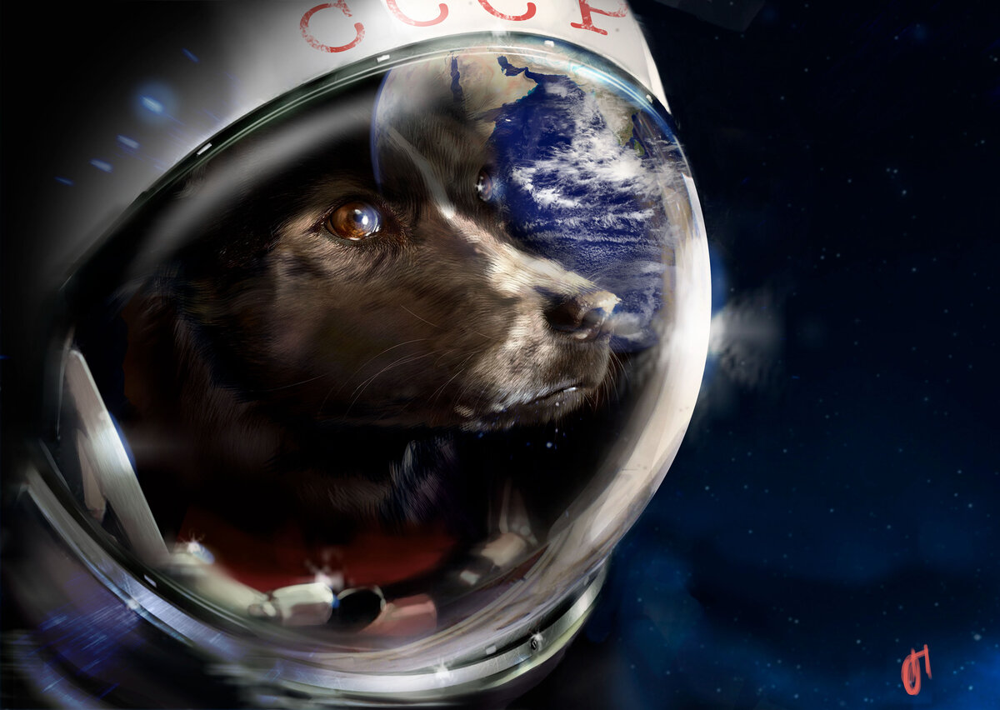
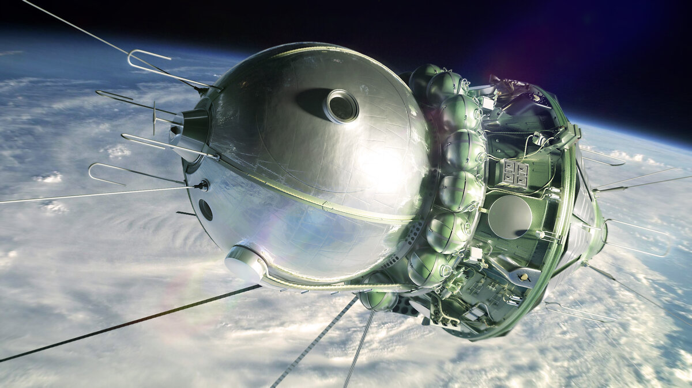
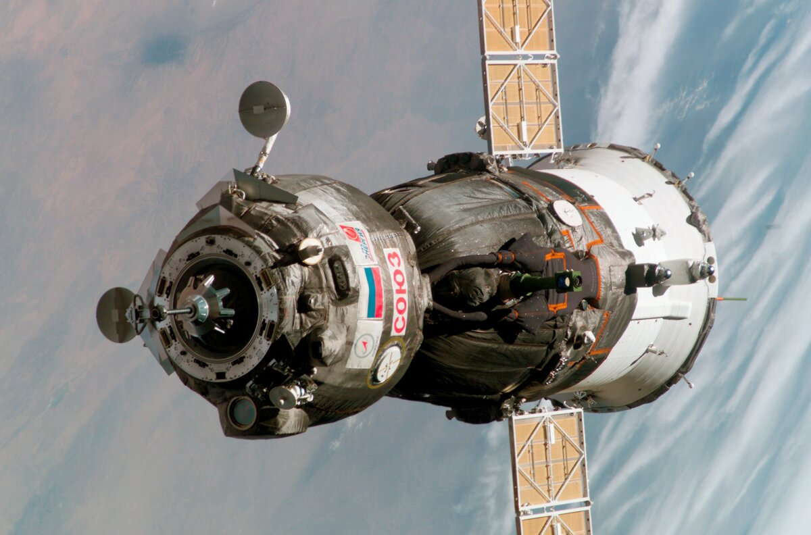

| Главная страница | Космос прошлого | Космос настоящего | Космос будущего |
Развитие отечественной космонавтики берет свое начало в 1946-м году, когда было основано Опытно конструкторское бюро №1, цель которого – разработка баллистических ракет, ракет-носителей, а также спутников. В 1956-1957-м годах трудами бюро была спроектирована ракета-носитель межконтинентальная баллистическая ракета Р-7, при помощи которой 4 октября 1957 года на орбиту Земли был выведен первый искусственный спутник «Спутник-1». Запуск состоялся на научно-исследовательском полигоне «Тюра-Там», который был разработан специально для этой цели, и который позже будет назван «Байконур». 3-го ноября 1957-го года произошел запуск второго спутника, на этот раз с живым существом на борту – собакой по имени Лайка.

С 1958-го года начались запуски межпланетных компактных станций для изучения Луны, в рамках одноименной программы. 12-го сентября 1959-го года впервые человеческий космический аппарат («Луна-2») достиг поверхности другого космического тела – Луны. К сожалению, «Луна-2» упал на поверхность Луны со скоростью в 12000 км/ч, в результате чего конструкция мгновенно перешла в газовое состояние. В 1959-м году «Луна-3» получил снимки обратной стороны Луны, что позволило СССР дать наименования большинству ее элементов ландшафта. В 1961-м году стартовал первый пилотируемый космический корабль «Восток-1». Разработка кораблей данного типа велась с 1958-го по 1963-й года конструктором О. Г. Ивановским под руководством генконструктора С. П. Королева. Особенность конструкции состояла в малых габаритах корабля. «Восток» были одноместными, а продолжительность их полета составляла до семи суток. За время программы было выполнено 12 запусков, из которых 10 успешных и 6 пилотируемых.
Следующим этапом пилотируемой программы стал КК «Восход», который был многоместный. Во время первого полета корабля этого типа (12 октября 1964 г) впервые космонавты были без скафандров. Во время полета КК «Восход-2» (18 марта 1965) был осуществлен первый выход человека в открытый космос. Важнейшим этапом в развитии отечественной и российской космонавтике было создание космического корабля «Союз». Разработка корабля потребовала немало времени (1965-1968 гг), кроме того первый запуск (23 апреля 1967 г) оказался трагически неудачным – во время приземления произошел взрыв и погиб космонавт Владимир Комаров. В результате данной аварии был отменен полет трех космонавтов на однотипном корабле, запланированный на следующий день. В 1968-м году корабля типа «Союз» были запущены в космос, где два корабля совершили первую стыковку, в 1969-м – групповая стыковка трех кораблей.
20-го января 1978-го года на орбиту Земли вышел первый беспилотный грузовой корабль «Прогресс». После распада Советского Союза Россия продолжила развивать данный проект и после 1991-го года было создано еще четыре модификации корабля. Последняя версия – «Прогресс МС» способная доставлять на МКС около 2,4 тонн груза.
| Главная страница | Космос прошлого | Космос настоящего | Космос будущего |